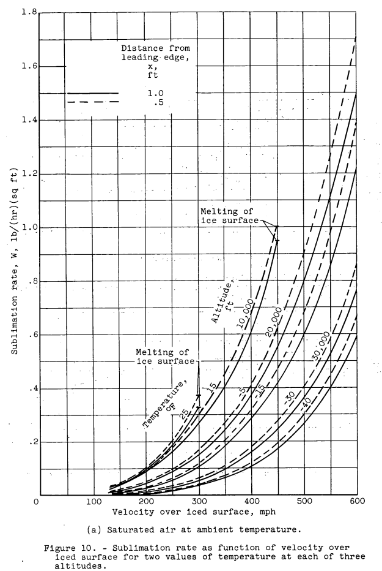
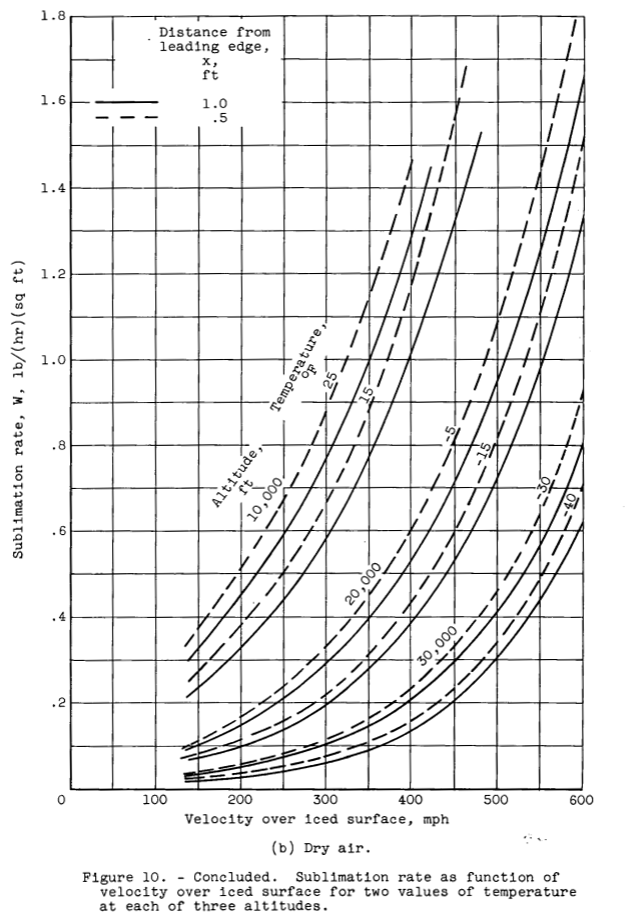

"there has been speculation concerning removing ice during flight in clear air at high altitudes by the process of sublimation"
"Experimental Investigation of Sublimation of Ice at Subsonic and Supersonic Speeds and its Relation to Heat Transfer" 1

Abstract
An experimental investigation was conducted in a 3.84- by 10-inch tunnel to determine the mass transfer by sublimation, heat transfer, and skin friction for an iced surface on a flat plate for Mach numbers of 0.4, 0.6, and 0.8 and pressure altitudes to 30,000 feet. Measurements of rates of sublimation were also made for a Mach number of 1.3 at a pressure altitude of 30,000 feet.
The results show that the parameters of sublimation and heat transfer were 40 to 50 percent greater for an iced surface than was the bare- plate heat-transfer parameter. For iced surfaces of equivalent roughness, the ratio of sublimation to heat-transfer parameters was found to be 0.90. The sublimation data obtained at a Mach number of 1.3 showed no appreciable deviation from that obtained at subsonic speeds. The data obtained indicate that sublimation as a means of removing ice formations of appreciable thickness is usually too slow to be of mach value in the de-icing of aircraft at high altitudes.
Summary
Sublimation rates at up to Mach 1.3 are measured.
Key points
- "natural ice formations resulting from the impingement and freezing of small water droplets on a surface are rarely smooth"
- Test were conducted to determine sublimation rates on rough ice surfaces.
- "Sublimation as a means of removing an ice formation of appreciable thickness is usually too slow to be of much value in aircraft de-icing at high altitudes."
Discussion
Be acquainted with the symbols.
Similarity between the processes of sublimation of ice and evaporation of water makes the principles evolved by previous investigators in the field of evaporation applicable to sublimation studies. From Reynolds analogy and from the work of many investigators, notably Colburn (refs. 2 and 3), in correlating experimental data, the relations between mass transfer, heat transfer, and skin friction for a flat plate are well known. Thus a reasonably accurate prediction of the rate of sublimation of a smooth ice surface subjected to a tangential low-velocity air stream could be made from available data. However, natural ice formations resulting from the impingement and freezing of small water droplets on a surface are rarely smooth, and very little is known of the sublimation rate of rough ice in a high- velocity air stream.
Note "natural ice formations resulting from the impingement and freezing of small water droplets on a surface are rarely smooth". The roughness requires that the boundary layer analogies be modified (a challenging task not undertaken in NACA-TN-3104), or experimental means be used (the means described herein).
The present investigation was undertaken to determine the rate of sublimation from the iced surface of a flat plate in a subsonic and a low supersonic air stream, and to relate the sublimation and heat transfer from a rough ice surface. The investigation was conducted in a 3.84- by 10-inch tunnel at the NACA Lewis laboratory.
Preliminary experimentation with several methods of forming ice together with limitations of space and access to the inside of the tunnel indicated that ice formed by the condensation of moisture from a humidity-controlled air stream on the cold surface of a metal plate most nearly suited the requirements.
The study of the heat-transfer process from the iced surface im- poses two additional requirements: (1) the transfer of heat must take place without the transfer of mass to avoid interaction of the two processes, and (2) the measurement of the temperature of the ice surface should be possible. The condensation method of forming the ice offers an indirect method for obtaining the surface temperature by measurement of the humidity of the air stream under conditions for which the ice thickness is constant (no net condensation or sublimation effect). The ice surface temperature under these conditions is equal to the temperature of saturation of the air stream. Thus both the additional requirements of the heat-transfer study can be satisfied through use of the condensation method of forming the ice. Therefore for this investigation ice was caused to form on the cold plate by in- creasing the humidity of the air stream by means of steam injection. When the dew point of the air stream exceeded the surface temperature of the cold plate, condensation in the form of a dense frost-like ice formation occurred, as shown in figure 3.
The movable probe shown in figure 3 was used for purposes of focusing the telescope and aiding in the determination of ice thick- ness.
The heat transferred through the ice or to the bare surface was determined from the heat gained by the alcohol flowing through the copper box in the model, as obtained from measurement of alcohol flow rate and change in alcohol temperature.
Stanton Numbers of Sublimation and Heat Transfer
The sublimation data obtained in this investigation were first calculated by using a value of unity for the ratio Sts/Sth. Values of Sts were obtained from equations (2) and (3). The heat-transfer data were calculated by using equation (4) to determine Sth. The ratio of the Stanton numbers thus determined from the experimental data had a value of 0.94. Recalculation of the data was then made by using an assumed value of 0.90 for the ratio Sts/Sth with a consequent reduction in the values of Sts. The experimental Stanton number ratio was then found to be approximately 0.90, which agrees with the assumed value. This determination of Stanton number ratio was made over the Mach number range of 0.4 to 0.8 and a pressure-altitude range of 5000 to 30,000 feet because both these factors influence the ice roughness.
The sublimation data obtained with the value of 0.90 for Sts/Sth are presented in figure 6 in the form of the Stanton number of sublimation as a function of Reynolds number. The solid faired line was obtained by use of the method of least squares. The heat-transfer Stanton number, as a function of Reynolds number, calculated for the case of a smooth flat plate from an empirical equation given in reference 10 is included for comparison. The data show that the Stanton number of sublimation Sts decreases with increasing Reynolds number and has a slope very nearly equal to that of the empirical relation for the heat transfer from a smooth plate. No consistent tendency to deviate from the sub- sonic results is exhibited by the limited data obtained at a Mach number of 1.3.

Comparison of figures 6 and 7 both with and without ice on the surface of the plate shows that, for ice roughness of the order of that present during this investigation, the sublimation and heat-transfer Stanton numbers are 40 to 50 percent higher than those for a smooth plate. The increase in heat-transfer Stanton numbers due to. ice on the surface was comparable with the increase in average skin-friction coefficients caused by ice on the surface.
Application to Aircraft Icing
Sublimation of an ice formation from an aircraft surface occurs during flight in clear air even though the air may be saturated. The relatively high surface temperatures of the ice (brought about by the frictional heating associated with high-speed flight) raise the vapor pressure at the surface of the ice such that it is always greater than the vapor pressure of the ambient air. Curves showing the sublimation rate as a function of altitude and of air velocity over the iced sur- faces for two ambient-air temperatures at each of three altitudes are shown in figure 10. The value of 0.90 for the Stanton number ratio was used in the computations for these curves. The curves for flight in saturated air are shown in figure 10(a) and for flight in dry air in figure 10(b).A comparison of the curves presented in figure 10 shows that the rate of sublimation is somewhat greater for flight in dry-air than for flight in saturated air, especially for the lower-altitude conditions.


Conclusions
SUMMARY OF RESULTS
The experimental investigation to determine the mass transfer by sublimation, heat transfer, and skin friction for an iced flat surface yielded the following results:
1. The Stanton numbers of sublimation and heat transfer were 40 to 50 percent higher for an iced surface than the Stanton number of heat transfer for a bare plate.
2. For iced surfaces of equivalent roughness, the ratio of the Stanton numbers of sublimation and heat transfer was 0.90.
3. Average skin-friction coefficients obtained with iced surfaces and with a bare plate showed increases due to ice roughness comparable with the increase in heat-transfer Stanton number due to ice on the surface.
4. The data obtained at a Mach number of 1.3 showed no appreciable deviation in sublimation Stanton number from that obtained at subsonic speeds.
5. Sublimation as a means of removing an ice formation of appreciable thickness is usually too slow to be of much value in aircraft de-icing at high altitudes.
For comparison, Messinger's 2 estimate for sublimation was:
Once an unheated surface has been allowed to collect ice, the period required to remove it by sublimation alone is long. It is of the order of 5 hours for 1/4 in. of ice at an air speed of 500 knots at 30,000 ft. and N.A.C.A. standard ambient temperature.
which equates to about 0.25 lbm/ft^2-hr at 500 knots (575 mph) (depending on the ice density).
Figure 10a (saturated air) yields about 0.5 lbm/ft^2-hr at -40C, and Figure 10b (dry air) yields about 0.6 lbm/ft^2-hr.
Citations
NACA-TN-3104 cites 11 publications:
- Hacker, Paul T., and Dorsch, Robert G.: A Summary of Meteorological Conditions Associated with Aircraft Icing and a Proposed Method of Selecting Design Criterions for Ice-Protection Equipment. NACA-TN-2569, 1951.
- Colburn, Allan P.: A Method of Correlating Forced Convection Heat Transfer Data and a Comparison with Fluid Friction. Trans. Am. Inst. Chem. Eng., vol. XXIX, 1933, pp. 174-210.
- Chilton, T. H., and Colburn, Allan P.: Mass Transfer (Absorption) Coefficients. Ind. and Eng. Chem., vol. 26, no. 11, Nov. 1934, pp. 1183-1187.
- Baines, W. D.: A Literature Survey of Boundary-Layer Development on Smooth and Rough Surfaces at Zero Pressure Gradient. Iowa Inst. Hydraulic Res., Univ. Iowa, 1951. (Office Naval Res. Contract N8-onr-500.)
- Hardy, J. K.: Kinetic Temperature of Wet Surfaces A Method of Calculating the Amount of Alcohol Required to Prevent Ice, and the Derivation of the Psychrometric Equation. NACA-ARR-5G13, 1945
- Boelter, L. M. K., Cherry, V. H., Johnson, H. A., and Martinelli, R. C.: Heat Transfer Notes. Univ. Calif. Press (Berkeley), 1946, p. XVI-36.
- Callaghan, Edmund E.: Analogy Between Mass and Heat Transfer with Turbulent Flow. NACA-TN-3045, 1953.
- Tucker, Maurice: Approximate Turbulent Boundary-Layer Development in Plane Compressible Flow Along Thermally Insulated Surfaces with Application to Supersonic-Tunnel Contour Correction. NACA-TN-2045, 1950.
- McAdams, William H.: Heat Transmission. McGraw-Hill Book Co., Inc., 1942.
- Eckert, E. R. G.: Introduction to the Transfer of Heat and Mass. First ed., McGraw-Hill Book Co., Inc., 1950, P. 117.
- Marvin, C. F.: Psychrometric Tables for Obtaining the Vapor Pressure, Relative Humidity, and Temperature of the Dew Point. W.B. No. 235, Weather Bur., U.S. Dept. Commerce, 1941.
NACA-TN-3104 is cited 2 times by publications in the NACA Icing Publications Database 4:
- Coles, Willard D.: Experimental Determination of Thermal Conductivity of Low-Density Ice. NACA-TN-3143, 1954.
- Coles, Willard D.: Icing Limit and Wet-Surface Temperature Variation for Two Airfoil Shapes under Simulate High-Speed Flight Conditions. NACA-TN-3396, 1955.
NACA-TN-3104 is cited 33 times in the literature 4.
Notes:
-
Coles, Willard D., and Ruggeri, Robert S.: Experimental Investigation of Sublimation of Ice at Subsonic and Supersonic Speeds and its Relation to Heat Transfer. NACA-TN-3104, 1954. ↩
-
Messinger, B. L.: Equilibrium Temperature of an Unheated Icing Surface as a Function of Airspeed. Preprint No. 342, Presented at I.A.S. Meeting, June 27-28, 1951. ↩
-
https://scholar.google.com/scholar?hl=en&as_sdt=0%2C48&q=Experimental+Investigation+of+Sublimation+of+Ice+at+Subsonic+and+Supersonic+Speeds+and+its+Relation+to+Heat+Transfer&btnG= ↩↩